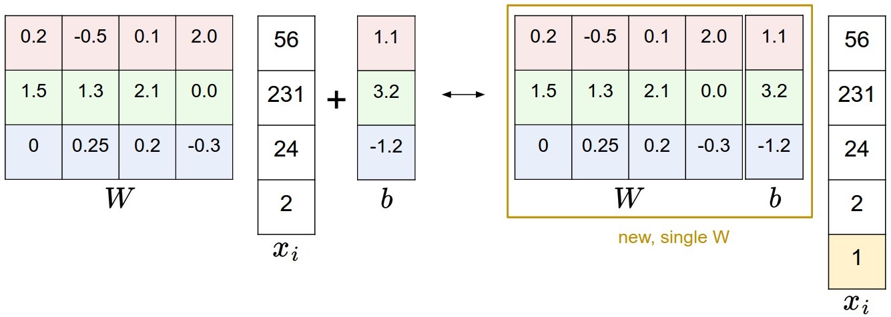
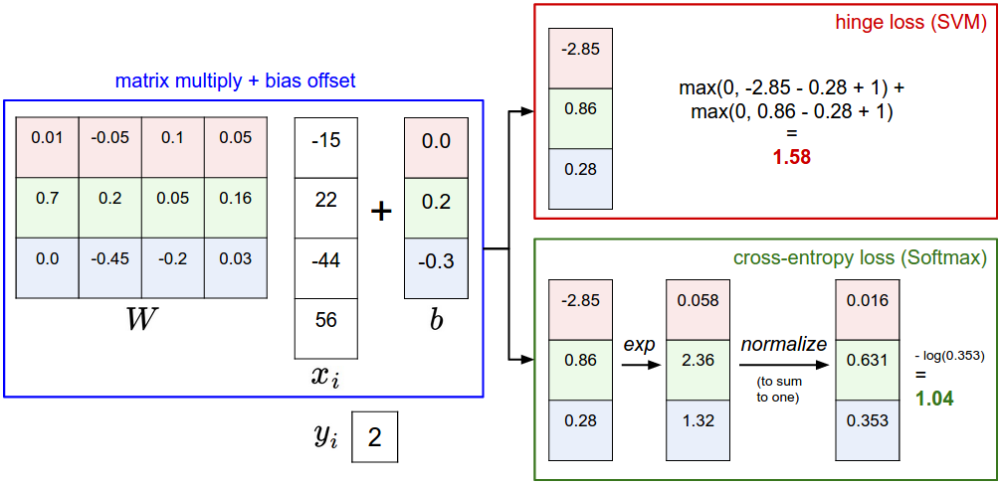

score function that maps the raw data to class scores. For visual recognition, score function maps the pixel values of an image to confidence scores for each class.
loss function that quantifies the agreement between the predicated scores and the ground truth labels.
Linear classifier. We will start out with arguably the simplest possible function( a score function), a linear mapping:
\[
f(x_i, W, b) = W x_i + b
\]
Convolutional Neural Networks will map image pixels to scores exactly as shown above, but the mapping ( \(f \)) will be more complex and will contain more parameters.
Bias trick: A commonly used trick is to combine the two sets of parameters (\(W, b\)) into a single matrix that holds both of them by extending the vector \(x_i\) with one additional dimension that always holds the constant \(1\) - a default bias dimension. With the extra dimension, the new score function will simplify to a single matrix multiply:
\[
f(x_i, W) = W x_i
\]

Loss Function: We want to set parameters W so that the predicted class scores are consistent with the ground truth labels in the training data. We are going to measure our unhappiness with outcomes with a loss function (or sometimes also referred to as the cost function or the objective). Intuitively, the loss will be high if we’re doing a poor job of classifying the training data, and it will be low if we’re doing well.
Multiclass Support Vector Machine(SVM): Thescore functioncomputes the vector \(f(x_i, W)\) of class scores, which we will abbreviate to \(s\) (short for scores). For example, the score for the j-th class is the j-th element: \(s_j=f(x_i,W)_j\). The Multiclass SVM loss for the i-th example is then formalized as follows:
\[
L_i = \sum_{j\neq y_i} \max(0, s_j - s_{y_i} + \Delta)
\]
The SVM loss function wants the score of the correct class \(y_i\) to be larger than the incorrect class scores by at least by \(\Delta\) (delta). If this is not the case, we will accumulate loss. Hyperparameter \(\Delta\) can safely be set to \(\Delta=1.0\) in all cases
hinge loss: The function max(0,1-t)$ is called thehinge loss` function.

Regularization:
Including the regularization penalty completes the full Multiclass Support Vector Machine loss, which is made up of two components: the data loss (which is the average loss \(L_i\) over all examples) and the regularization loss. That is, the full Multiclass SVM loss becomes:
\[
L = \underbrace{ \frac{1}{N} \sum_i L_i }_\text{data loss} + \underbrace{ \lambda R(W) }_\text{regularization loss} \\\\
\]
Or expanding this out in its full form:
\[
L = \frac{1}{N} \sum_i \sum_{j\neq y_i} \left[ \max(0, f(x_i; W)_j - f(x_i; W)_{y_i} + \Delta) \right] + \lambda \sum_k\sum_l W_{k,l}^2
\]
Where \(N\) is the number of training examples.
Code. Here is the loss function (without regularization) implemented in Python, in both unvectorized and half-vectorized form:
Softmax classifier: Another commonly seen classifiers besides SVM classifier is the Softmax classifier, which has a cross-entropy loss:
\[
L_i = -\log\left(\frac{e^{f_{y_i}}}{ \sum_j e^{f_j} }\right) \hspace{0.5in} \text{or equivalently} \hspace{0.5in} L_i = -f_{y_i} + \log\sum_j e^{f_j}
\]
where we are using the notation \(f_j\) to mean the j-th element of the vector of class scores \(f\). As before, the full loss for the dataset is the mean of \(L_i\) over all training examples together with a regularization term \(R(W)\). The function \(f_j(z) = \frac{e^{z_j}}{\sum_k e^{z_k}} \) is called the softmax function: It takes a vector of arbitrary real-valued scores (in \(z\)) and squashes it to a vector of values between zero and one that sum to one.
The difference between SVM classifiers and Soft-max classifiers:

Reference
- CS231n Convolutional Neural Network
- Aurelien Geron. Hands-On Machine Learning with Scikit-Learn & TensorFlow